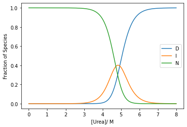
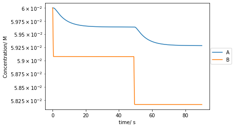
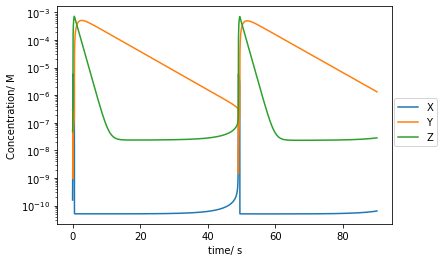
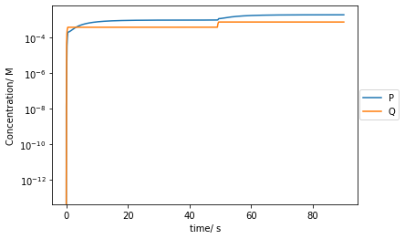
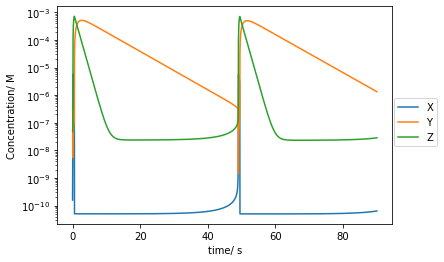
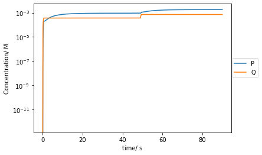

kf1 = 26000
kr1 = 0.06
kf2 = 730
kr2 = 0.00075
urea_conc = np.linspace(0, 8, num=10000)
ss_conc = np.array([steady_state_calc(kf1*np.exp(-1.68*conc), kr1*np.exp(0.95*conc), kf2*np.exp(-1.72*conc), kr2*np.exp(1.20*conc)) for conc in urea_conc])Chemical Kinetics
Find Steady State and time dependent concentrations of species
steady_state_calc
steady_state_calc (kf1:float, kr1:float, kf2:float, kr2:float)
Calculate the steady state equilibrium of reaction D<->I<->N, given the rate of the forwards and backwards processes at each step
| Type | Details | |
|---|---|---|
| kf1 | float | rate constant for D->I |
| kr1 | float | rate constant for I->D |
| kf2 | float | rate constant for I->N |
| kr2 | float | rate constant for N->I |
For instance, for varying concentrations of urea:
Consider the reaction
\[D \xrightleftharpoons[k_{u}^{R15}]{k_{f}^{R15}} I \xrightleftharpoons[k_{u}^{R16}]{k_{f}^{R16}} N\]
In the steady state, the rate of change of all components it null and so
\[k_{u}^{R15}[I]-k_{f}^{R15}[D]=0\] \[k_{f}^{R16}[I]-k_{u}^{R16}[N]=0\]
and with an additional restriction that the total number of substances is constant: wlg let that be 1:
\[[D]+[I]+[N]=1\]
As such this can be represented as a matrix:
\[\begin{pmatrix}-k_{f}^{R15}&k_{u}^{R15}&0\\ 0 & k_{f}^{R16} & -k_{u}^{R16}\\ 1&1&1\end{pmatrix}\begin{pmatrix} [D] \\ [I] \\ [N] \end{pmatrix} = \begin{pmatrix} 0 \\ 0 \\ 1 \end{pmatrix}\]
And thus
\[\begin{pmatrix} [D] \\ [I] \\ [N] \end{pmatrix} = \frac{1}{k_{f}^{R15}k_{f}^{R16}+k_{f}^{R15}k_{u}^{R16}+k_{u}^{R15}k_{u}^{R16}}\begin{pmatrix}-k_{f}^{R16}-k_{u}^{R16}&k_{u}^{R15}&k_{u}^{R15}k_{u}^{R16}\\ k_{u}^{R16} & k_{f}^{R15} & k_{f}^{R15}k_{u}^{R16}\\ k_{f}^{R16}&-k_{f}^{R15}-k_{u}^{R15}&k_{f}^{R15}k_{f}^{R16}\end{pmatrix}\begin{pmatrix} 0 \\ 0 \\ 1 \end{pmatrix}\]
plt.plot(urea_conc,ss_conc[:, 0],label='D')
plt.plot(urea_conc,ss_conc[:, 1],label='I')
plt.plot(urea_conc,ss_conc[:, 2],label='N')
plt.xlabel('[Urea]/ M')
plt.ylabel('Fraction of Species')
plt.legend()
plt.show()
oreg_calc
oreg_calc (concs:list, method:str='Euler', tmax:float=90, dt:float=2e-06, k1:float=1.34, k2:float=1600000000.0, k3:float=8000.0, k4:float=40000000.0, k5:float=1)
Calculates the time dependent concentrations of species in the oregonator system using the Euler method
| Type | Default | Details | |
|---|---|---|---|
| concs | list | the concentrations [A,B,X,Y,Z,P,Q] | |
| method | str | Euler | the method to use for the integrator |
| tmax | float | 90 | the interval over which to run the integrator |
| dt | float | 2e-06 | the time step for the integrator |
| k1 | float | 1.34 | the rate constant for A + Y -> X + P |
| k2 | float | 1600000000.0 | the rate cosntant for X + Y -> P |
| k3 | float | 8000.0 | the rate constant for B + X -> 2X + Z |
| k4 | float | 40000000.0 | the rate constant for 2X -> Q |
| k5 | float | 1 | the rate constant for Z -> Y |
The currently implemented methods are Euler’s method ('Euler'), the midpoint method ('midpoint'), Heun’s 3rd order method ('Heun3'), Third-order Strong Stability Preserving Runge-Kutta ('SSPRK3') and the classical Runge Kutta 4th order method ('RK4'): Butcher tableaus for all methods can be found here (all are explicit methods). However, Euler’s method remains the fastest of these as the minimum timestep does not increase enough to outweigh the increase in complexity from any other method.
A, B, X, Y, Z, P, Q = 0.06, 0.06, 10**(-9.8),10**(-6.52), 10**(-7.32), 0, 0
concs = [A, B, X, Y, Z, P, Q]
t, conc_t= oreg_calc(concs, method = 'Euler', dt = 2e-6)
As, Bs, Xs, Ys, Zs, Ps, Qs = conc_tplt.plot(t[::10000],As[::10000],label='A')
plt.plot(t[::10000],Bs[::10000],label='B')
plt.yscale('log')
plt.xlabel('time/ s')
plt.ylabel('Concentration/ M')
plt.legend(bbox_to_anchor =(1.15, 0.6))
plt.show()
plt.plot(t[::10000],Xs[::10000],label='X')
plt.plot(t[::10000],Ys[::10000],label='Y')
plt.plot(t[::10000],Zs[::10000],label='Z')
plt.yscale('log')
plt.xlabel('time/ s')
plt.ylabel('Concentration/ M')
plt.legend(bbox_to_anchor =(1.15, 0.6))
plt.show()
plt.plot(t[::10000],Ps[::10000],label='P')
plt.plot(t[::10000],Qs[::10000],label='Q')
plt.yscale('log')
plt.xlabel('time/ s')
plt.ylabel('Concentration/ M')
plt.legend(bbox_to_anchor =(1.15, 0.6))
plt.show()
A, B, X, Y, Z, P, Q = 0.06, 0.06, 10**(-9.8),10**(-6.52), 10**(-7.32), 0, 0
concs = [A, B, X, Y, Z, P, Q]
t, conc_t= t, conc_t= oreg_calc(concs, method = 'RK4', dt = 3e-6)
As, Bs, Xs, Ys, Zs, Ps, Qs = conc_tplt.plot(t[::10000],As[::10000],label='A')
plt.plot(t[::10000],Bs[::10000],label='B')
plt.yscale('log')
plt.xlabel('time/ s')
plt.ylabel('Concentration/ M')
plt.legend(bbox_to_anchor =(1.15, 0.6))
plt.show()plt.plot(t[::10000],Xs[::10000],label='X')
plt.plot(t[::10000],Ys[::10000],label='Y')
plt.plot(t[::10000],Zs[::10000],label='Z')
plt.yscale('log')
plt.xlabel('time/ s')
plt.ylabel('Concentration/ M')
plt.legend(bbox_to_anchor =(1.15, 0.6))
plt.show()
plt.plot(t[::10000],Ps[::10000],label='P')
plt.plot(t[::10000],Qs[::10000],label='Q')
plt.yscale('log')
plt.xlabel('time/ s')
plt.ylabel('Concentration/ M')
plt.legend(bbox_to_anchor =(1.15, 0.6))
plt.show()